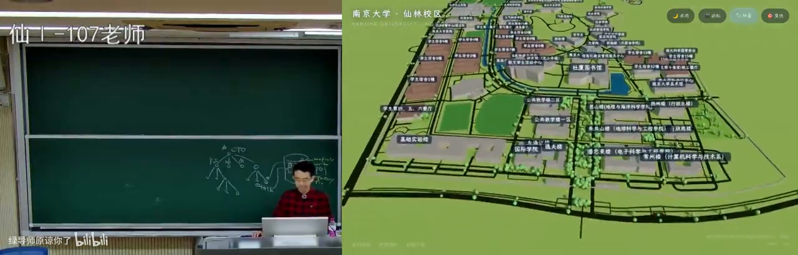
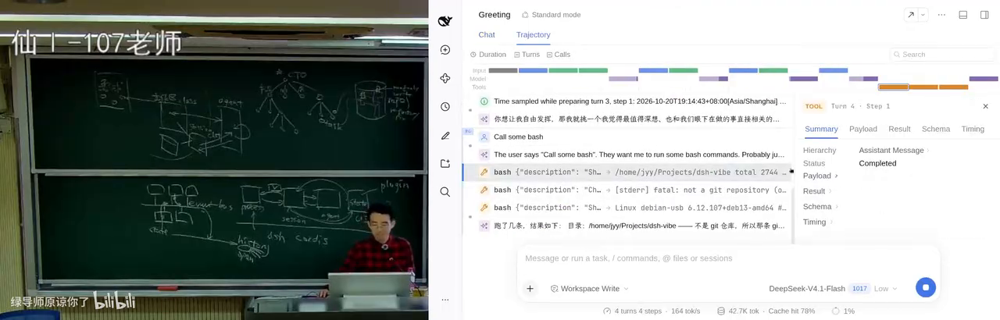
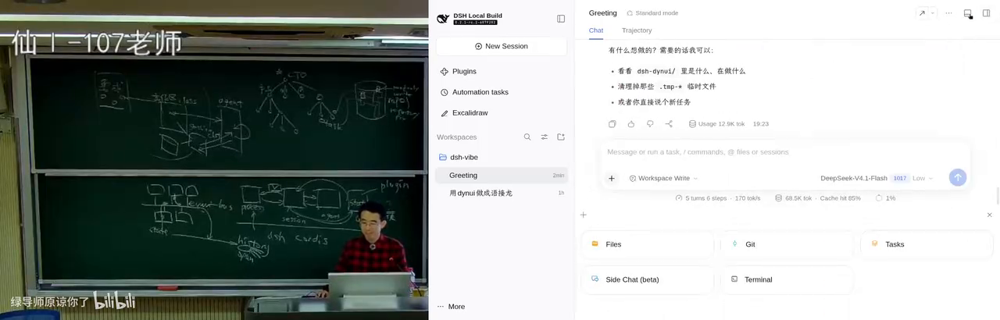
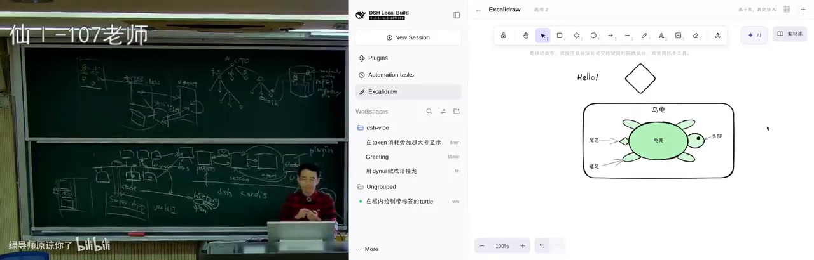
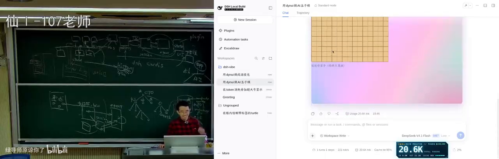

课程：26 生成式软件工程（NJU） 原视频：DeepSeek Harness (1) [09-Raw/26生成式软件工程/NJU] 时长：约 89 分钟 阅读时长：约 32 分钟（按正文阅读单位估算，非实测）
上一讲用 150 行代码写出了一个能跑的 agent（能自己调用工具、多轮执行任务直到把事做完的模型程序）。这一讲换一个问题：如果要把它做成一个产品，会遇到什么。讲师选的案例是 DeepSeek Harness（下称 DSH）——一个把 agent 运行时做成操作系统微内核的开源项目。全程只讲四件事：需求为什么会变、架构在受限与自由之间怎么取平衡、DSH 用什么抽象支撑插件生态、以及这个架构最终能长出什么。
说明：本文依据课堂字幕整理。讲师对产品的判断、预测与个人项目披露均按原意标注归属；字幕中明显误转的专名已按上下文校正，个别无法确定的保留疑点。
一、为什么要在智能体时代重讲软件工程
1.1 你不再是一个单线程 agent
软件工程、项目、项目管理这些概念之所以要反复重讲，是因为它们在 agent native 时代正在被重新定义。
讲师用了一个身份比喻：你自己上学时是单线程 agent（一次只推进一件事的执行者）——学 C++、学 Python、写自己的项目，全在自己一个人的时间线上。而当你开始用 agent，你立刻拥有了一家现代公司的架构：你是 CTO，负责全部，但很可能不写代码；下面有架构、产品、UI、前端、后端好几个 agent；每个 agent 又带多个 sub agent（被派出去执行子任务的下层 agent），sub agent 还能再创建更多。这个组织架构不是比喻，是管理复杂需求的必需品——没有它，你接不住一个复杂需求。
讲师提到一个时间点：就在上周，Anthropic 说 Git 已经不够用了。他的态度是“这很自然”：在讲版本管理那一讲时他就说过，总有一天会不够用。
商品最终仍要交付：需要版本控制、需要仓库（repository，存放代码与历史的目录），产品还要经过 CI/CD（持续集成与持续交付，代码提交后自动构建、测试、上线）才能对外提供服务。
1.2 多个 agent 改同一个仓库：并发改动怎么协调
一个 agent 收到的是一个 task。从 first principle（第一性原理，即从最根本的事实出发推理）看，这个 task 一定和仓库的某一部分相关：可能重构某个 subsystem，可能在某处加功能，可能影响若干模块。不同 task 在系统里“覆盖的形状”不一样。
讲师设想给这些操作加锁（先占住一块区域，避免别人同时改动），而且锁应该有类型：
- 只读锁：只是看，不改；
- 写锁；
- 重构锁。
关键判断是：一个小的 fix 虽然是写锁，但不产生 breaking change（让已有调用方或结构失效的改动），所以多个互相独立的小 fix 完全可以并行执行。
可以借鉴的既有方案有两种：操作系统式的“先上锁”，以及数据库式的“先做、再做冲突检测”——即乐观并发（先各改各的，提交时检测冲突，冲突才回退）与悲观并发之分。讲师明确说，这套方案目前还没有真正用起来；但他认为答案会随着组织架构的清晰而慢慢浮现，而世界正在朝这个方向推进。
1.3 选 DeepSeek Harness 当案例
概念讲得差不多了，就该落到具体项目上：如果真要设计一个 AI native 时代的产品，整个流程会是什么样。
讲师选 DSH 的原因很实际：他前天在北京参加了 DSH 的线下聚会，到场很多是与在座同学同龄的开发者。他们不像讲师那样写过很多代码、经历过“古法编程”时代，很多是对着网页许愿式编程（把需求说给模型，让它自己想办法实现）成长起来的；但这批人几年后很可能成为核心开发者。所以要讲清楚：从零开始构建一个 agent harness，会遇到什么问题。
本讲覆盖需求、架构，以及“在 DSH 上做二次开发”时整个软件系统的设计。下一讲再讲 agent native 开发更细的部分。
讲师也提前解释了一个常见困惑：网上有很多 skills，可以 grow 出各种能力、看起来有 super powers，但真正拿来用时，会发现 agent 陷进无穷多你不想让它管的事情里——尤其面对未知时你不知道它在干什么，有时它会疯狂派 sub agent 做你觉得没必要的测试和 validation。这些行为在公司真做产品时可能成立，但最好自己摸索一遍，有切身感受。
本次演示环境是他已经编译好的 DSH，运行方式是纯许愿式的：从部署到外部对接，只确认“这个项目可以被编译”，剩下交给 agent。
二、一个能跑的东西离产品有多远
2.1 一句话生成南大仙林三维模型
起点是上一讲的 mini agent。几乎所有 agent harness 都遵循同一个循环，因为大模型推理是 request-response 式的：一问一答，不管回答方是人还是工具。
这个 mini agent 能用，而且能做不 trivial 的任务。讲师在高铁上给了一句话需求：要一个比例基本真实的南大仙林校区三维图。结果超出预期——虽然有些地方不对（计算机楼是十层楼，高度明显做错），但图书馆建模相对较好，俯视的几何形状被正确保持了。
它是怎么做到的？讲师看了 agent 的 trace（执行轨迹）：网上有大量数据源。他上学时就发现过一个宝藏网站 OpenStreetMap（开放协作的世界地图数据库，可自由下载矢量地图），细到连一个篮球场的边线都会画出来。agent 从这里爬数据，再按自己的想法建模：地图上没有信息的区域被标成绿色，它判断是绿地（可能有小公园或休息座椅）；大门也被建成了楼，门口铺满了树。
改进路径也清楚：给它更好的提示词——把每一块区域单独划定，先思考这块区域的功能应该是什么样，再做精确建模。代价是大约十倍 token（模型读写文本的最小计费单位，多轮反复迭代就多烧算力），换来一个明显更好的版本。
网上很多三维生成效果用的是同一套路：靠 skills 追着 agent 一遍遍验证，烧 token 在“还不错”的基础上继续修。讲师说，这类模型已经可以作为做“南大版 GTA”的起点——你知道哪里可以走人、哪里可以蹲点，游戏逻辑就能搭起来。

南大仙林校区三维模型：几何形状基本正确，楼高与区域功能判断有误字幕对照 · 在 B 站打开 (00:07:42)
但结论是：它能课上玩一把，不能作为产品。
2.2 断网：mini agent 缺的那三件事
原因在上一版的一个隐含假设：它假设网络服务不会中断。只聊一两轮，你感受不到；但讲师在高铁上跑了一段较长时间、已经有中间结果时，网断了——进程直接终止。而那 150 行代码里没有会话保存，没有恢复，也没有断网重连。他只有两个选择：从零继续，或者整段重做。
这属于 accidental complexity（偶然复杂度：问题本身不难，是工具与环境逼出来的额外复杂度）。一旦要做一个真正的 agent 产品，第一件要应对的就是 API 中断，也就是你天天在 coding agent 里看到的各种重连行为。
2.3 重试为什么是设计问题
重连听起来简单，往下追就变成一系列选择。
间隔：在美国的数据中心直连 OpenAI 服务，和在国内叠多层代理访问，是完全不同的网络环境，timeout（等待多久算超时）和重试时长都不一样。
退避方式：第二次重试该用等间距，还是逐步拉长？网络里有个成熟特性叫指数退避（失败后按 1、2、4、8 秒这样成倍拉长间隔再试）：既然 1 秒后失败、再 1 秒后还失败，那大概率下一秒仍然失败，所以应该等 2 秒、4 秒、8 秒，一直退到分钟级。讲师自己的物理断网场景，恢复可能需要两三分钟。
讲师还让 AI 帮忙总结过这个话题，AI 又列出了一堆更细的坑。而真实产品里的挑战比这更大。
2.4 断网下的支付：未知状态
最典型的例子是客户端与服务端不一致。
客户端发起支付请求，服务端收到后要和别的系统确认（银行、航空公司），它等不了你把所有事做完再关事务：钱付给银行或航司的那一刻，事务（一组要么全成功要么全失败的操作）就已经在服务端 commit（提交生效）了。服务端有很复杂的架构保证订单可靠完成，但问题出在客户端：订单发出去以后，手机断网了。
这时应用不能崩，它得转圈，得告诉你网络中断；但这个订单处在一个“我不知道”的状态——可能成功了，也可能失败了，因为缺少与服务端的同步，客户端无法判定自己到底是什么状态。
这就是 essential complexity（本质复杂度：业务本身固有的复杂度，写得再聪明也消不掉）。软件系统设计里，这类复杂度躲不掉。
2.5 产品级需求清单：为什么直接实现会走样
那么一个 agent 产品到底要做多少东西？
先说最基本的骨架：产品级 agent 需要能同时在多个工作目录上工作、能在多个项目之间切换的 dashboard（仪表盘式的总控界面）、项目相关的工具与 skills（预置的能力包），以及运行过程中对工具调用施加沙箱（限制权限的隔离环境）和权限审批——也就是你在 coding agent 里天天遇到的 approve 交互。
讲师的做法是让 AI 假装要做一个交互式 agent 产品（他举例说可以对标当时最火的 WorkBuddy），看它会写出什么需求。结果 AI 先想到了典型场景与用例图，比如“把这个文件夹里本周的项目记录整理成周报、列出延期事项、生成 Word 文件”——这是普通人办公时非常常见的需求；然后开始疯狂列需求点：
- 历史检索与任务复用；
- 模板与偏好；
- 执行预算与用量；
- 账号与数据管理；
- 外部内容与指令隔离；
- 用户反馈与问题诊断。
而且实际上还会多得多，此外还有大量非功能性需求（性能、安全、权限、成本这类不属于具体功能的约束）。
如果直接让 agent 去实现这份需求，大概率会陷入 slop（讲师用词：量大、能跑、但缺少判断的粗制实现）。原因是 agent 有一个非常强的倾向：直接把任务完成，不花脑子想未来还会发生什么。
所以做一个产品和做一个 MVP 是不一样的。但 MVP（最小可用版本，用最少功能验证需求是否成立）有它的价值：用 MVP 时你的假设会不断被验证。讲师那个 mini agent 就做了一个不切实际的假设——网络稳定、API 稳定；假设不成立，需求就相应膨胀了。
三、需求：真正的敌人是需求改变
3.1 改需求三次
所以设计 agent harness 面对的真正的挑战，不是把当前需求做完，而是需求的改变。
讲师构造了一个场景：你已经按办公场景写了一份面向 WorkBuddy 的详尽需求报告，带着 AI 写了 50 万行代码，并且上线了。然后 GrokBot 火了。
GrokBot（xAI 2026 年推出的多智能体产品，把 AI 当同事）带来一种新交互：把 agent 当人。当人对待，每个人就有自己的记忆，于是可以拉一个群让两个 agent 协同完成工作，也可以规定谁每天什么时间做什么（GrokBot 里叫 routine，即按固定时间或触发条件自动执行的任务）。
这时你发现，原来那份详尽需求的前提全废了。原需求定的是左边栏放项目、右边栏放几种视图（pinpoint view 之类）。老板说下一版照 GrokBot 做——“怎么杀死一个程序员？改需求三次就够了”。因为之前所有需求都建立在那个交互模式上，而交互模式的根基崩塌了。
这也解释了大厂的行为：不管它把架构做得多好，性能做到极致，功能性与非功能性需求都极好地满足上一版设计，一旦这种摧毁性的变化来了，它必然要开始疯狂拉通对齐、闭环沉淀复用，再到下一个版本。这没办法——大厂有交付质量要求，它做了一个选择：优先保证极高质量交付，所以架构会相对保守。
3.2 GrokBot 与 DSH bot 的光速复刻
对比之下，DSH 生态的反应速度是另一种景象。
GrokBot 火了之后，很快有不止一个人发布了 DSH bot：界面像素级复刻——可以设置多个 bot，可以拉群，群还有群图标，可以和 bot 聊天。讲师认为在这之上还能外挂它没有的功能：
GrokBot 面向普通人，所以不开放任何编辑配置的权限。但对程序员来说，就想把配置文件拿出来自己改一下，或者把提示词拿出来改一下——“因为我懂得怎么改提示词，而 99% 的人不知道怎么跟模型对话”。GrokBot 是很成功的产品，但你不满意就可以“许愿”加上别的功能：比如一个 multi agent 交互的 dashboard，让你以老板视角管理，左边栏不是项目树，而是代表你所管理部门层级的树状结构，右边的聊天压缩小一点，甚至给你一点“坐在办公室里的老板”的情绪价值。这类需求很快也有人实现。
讲师说这个故事的用意在于：同样是需求变化，一边是拉通对齐，一边是光速复刻，差别来自架构给了多少自由度。
3.3 2026 年 6 月 10 日晚 11 点
时间倒回 2026 年 6 月 10 日。那时 coding agent 已经让大家意识到要变天了，主流产品有 Claude Code、OpenCode 等；还没有 WorkBuddy，有 CodeBuddy（讲师后来得知两者共享同一套 agent 层编排的底层架构）。
当晚 11 点，一个神秘项目启动，仓库里什么也没有——“谁说 DeepSeek 不加班的”。连当时为了同时支持多种 agent 而需要的 CLAUDE.md（放在仓库里告诉 agent 项目规则与命令的说明文件）都没有，这本身是个很麻烦的需求点：项目要同时支持多个 agent，就得用它们都理解的方式组织文件。好消息是今天已经不必依赖它了。
而它的第一份需求分析（一份 link 进去的 MVP requirement analysis）里就写着一个 microkernel（微内核：内核只做最小调度，其余能力全部外挂成可替换模块）架构。从第一天起，它就想做一个操作系统，想造一艘航母。
四、架构：受限与自由之间的取舍
4.1 对着需求做架构会得到什么
如果直接对着需求文档让 agent 设计架构，会发生一件很自然的事：agent 的注意力落在需求上，而它不能交一个空架构（那等于没完成任务），于是会为需求里的名词建结构。
比如需求里有个“工作区”。agent 就会为工作区做一个 class，再去补工作区和其他东西的交互：和模型、和 agent 层怎么交互；工作区里可以链接 session（会话：一次持续对话的上下文容器）；session 可以向 agent 发 chat；agent 之间可以调用 agent loop 或工具做事；工具的结果（比如画布的绘制结果）可以放回 session 上；session 的数据该存数据库。
于是架构开始出现模块、出现数据库、出现消息队列。这是非常自然的架构设计方式，大厂也经常这么设计。
但讲师强调：架构意味着没有免费的午餐。 任何设计都是在受限和自由之间达成的平衡。
4.2 边界的好处与代价
架构确定，模块之间的边界就有了。边界带来的直接好处是：开发某个模块时，不必（或只需少量）知道系统其余部分怎么工作。
于是第一天就能把需求切进这个架构，每个模块独立开发，立刻可以启动大量 sub agent 并行把产品堆出来。
代价是自由度：你做的这个限制，限制了未来。当 GrokBot 那样的需求出现时，如果架构适应不了，就会不断出现抽象泄露（原本封装好的细节被迫漏出来，调用方不得不关心它），项目很难维护下去。
但这不意味着自由越多越好：如果把所有约束都拆掉，会走到另一个极端。
4.3 太自由等于没有架构
反过来，做得太自由也不行。讲师假设有人要做“创新架构”：每个模块都是一个 process（进程），工作区、session、agent、UI 各是一个进程，进程之间全靠 message passing（消息传递：模块之间不直接调函数，而是发消息通信）。
这个架构看起来很干净、很自由，随便发消息。讲师说：这确实就是个 actor model（每个单元都是独立进程、只能靠收发消息协作的模型）——说得对，可能确实能这样实现，但它没有约束：消息怎么管理、什么时候发什么消息，全都没有规定。
对比之下，前面那种架构规定了工作区和 agent 之间通过某个 API、某个队列（比如 session 的消息队列）交互。接口一确定，就只能做这件事，反而容易开发。
越容易、越自由的东西，越不好开发。 受限有受限的好处，自由有自由的好处。
4.4 老案例：进程、语言与建站组合
同样的取舍在软件史上一再出现。
进程是一个非常好的抽象，非常自由——正因如此，上层才能搭建各种应用：浏览器、coding agent、虚拟机。但自由也有代价：光“操作系统该用什么语言开发”人类就吵了几十年，当年“PHP 是最好的编程语言”这个梗流行了很久；高级语言越自由（比如 C 能更好地控制机器），就越可能带来内存泄漏这类麻烦。受限与自由无法两全，只能在光谱上取一个位置。
再比如经典的 LAMP（Linux + Apache + MySQL + PHP 这套建站组合）架构，它引领了整个互联网世界至少十几年，WordPress 就是典型代表。它很好——在单机还能处理应用需求的时候，它就是最合适的架构，PHP 就是最好的语言。但当你需要服务 1 亿人、10 亿人时，这个架构就扛不住了：从单机到数据库，每一个点都是瓶颈。为了拆开，就分库分表，再拆服务器，一路都是抽象泄露，最终演进到下一代架构。
4.5 事件溯源的代价：强行毕业
event sourcing（事件溯源：只追加记录发生过的事件，当前状态由事件重放算出来）是个概念非常干净的架构：所有东西都是事实，只做追加记录，其他人看到的都是事实的派生。它给你解耦、给你持久化、甚至可以回退到任何历史版本。
但它不是没有代价的。因为当前状态完全由过去的历史推导出来，想让性能做好难度更大。
更麻烦的是一种真实需求：有时候我们真的只想 hack 当前状态。讲师举例：教务员就是想让你强行毕业，没有理由。在一个月黑风高、没人知道的时候悄悄操作一下，你就毕业了——这在真实世界里可能是个合适的需求。但在 event sourcing 里很难办到：你必须加入一个特殊的 event 和特殊的处理规则，叫“强行毕业”；而这件事因为写进了持久的历史，会被审计到，你又不能用“我也不知道当时怎么回事”来搪塞——因为谁 committed 这个 event，当时就知道。
所以每个架构都有取舍：牺牲一些，换来解耦的系统、持久化、可回退。
4.6 MapReduce：用限制换规模
总原则是：架构和需求匹配时就便利；假设发生变化时，架构就可能成为阻力。 讲师由此延伸：人类社会的进步，某种程度上就是不断打破旧假设的过程——新产业诞生、旧产业消亡，新旧交替时有人才流转，也有人被淘汰（他举了国企改革、房地产、互联网到云计算再到 AI 的历次浪潮）。而 AI 是产业超级加速器，这个变化会更有趣。
接下来是一个具体的架构变化案例。2004 年，Jeff Dean 与 Sanjay Ghemawat 发表了一篇改变世界的文章：MapReduce（大规模集群上的简化数据处理）。文章非常好读，只看例子就够了——要做大规模分布式计算，你不用写很长很长的代码，只要遵循一个受限的代码模式：map 和 reduce（把一个列表逐项变换，再把结果逐步合并）。这也是函数式编程里的概念，Python 里就有。
- map：有一个 list，再有一个 function，就能把它变成另一个 list；
- reduce：拿一个 function，不停地用前一次结果和下一个元素计算；如果这个 function 有好的数学性质（比如结合律），就可以并行地 reduce 两个部分，再 reduce 它们的结果。
只要能把计算写成这个形式，就能用它的框架。它做了一个架构上的取舍：限制你的编程模型——你只能先 map 再 reduce。同时它做了很多聪明的系统设计：reduce 前会把中间结果按 key 排序，这一步叫 shuffle（把中间结果按 key 重新分发排序的过程），剩下的系统实现藏在后面，你不需要知道。早期 Google 内部是 C++ 的，include 一个头文件，写个 class 说明 map 和 reduce 是什么就行；你用的抽象不再是 pointer、list，而是系统包裹好、可能跑在不同机器上的那层东西。你只需要声明：要 map reduce，最多 2000 台机器，每台每任务 100MB 内存，跑吧。
它解决了 Google 最大的痛点：机器一多，系统就不可靠；跑一次全互联网数据的索引，几乎一定会有机器掉线或故障。以前的基本假设是“机器是好的”——你在自己电脑上做大作业，机器不会突然消失；就算消失了，你还能用社会工程的方式找老师解释。Google 不能用这种方式解决问题，它必须用系统抽象解决。
它也失败了。因为这个限制只适合离线任务：用起来不那么方便；而当实时数据（比如银行订单）也走向分布式时，MapReduce 就撑不住了，于是有了 Spark 这样的计算引擎和 Flink 这样的流式数据处理。
五、DeepSeek Harness 的架构
5.1 第一性原理：一切皆插件
讲完这一串取舍，回到问题：如果要设计一个 agent harness，first principle 是什么？
DSH 的答案是操作系统式的：操作系统不需要知道每个进程在干什么。UNIX 诞生时还没有桌面浏览器，也没有图形界面，它不需要管这个进程做什么，但它能把这些进程组合起来，让进程之间互相组合、互相使用。
所以它的 first principle 是 Everything is a plugin（一切皆插件：所有能力都做成可装卸的插件）：所有东西都可以插件化解耦。
如果你把每个插件想象成一个进程、一个人，让它们之间互相发送消息，理论上就能实现任意架构。这个架构真正的要求是：把每个模块的 private state（私有状态：只属于该模块内部的数据）封在自己里面；模块之间需要交互时，发一条消息，得到一条返回。
由此可以推下去：任何程序的任何模块都能被提取成“进程”，把模块之间的函数调用换成 RPC（远程过程调用：像调本地函数一样调远端进程的函数），任何软件都会变成这个形态。
5.2 插件内核管什么
讲师特别区分了两层：DSH 底下的插件内核叫 Cordis（DSH 的插件框架，只负责插件加载、卸载与依赖管理），它在 DSH 之前就有一篇论文，里面有大量公式；本讲不展开这部分。
Cordis 负责的是服务的解析、依赖的激活，以及这些插件的 load 和 unload。
如果把 DSH 想成操作系统，那上面的东西就是进程。操作系统里该有进程管理：一个进程退出时，它持有的所有资源都应该被回收——这是一件大家默认了很久的事，就像写 C 程序从来不回收内存，因为知道操作系统会回收。
Cordis 的设计也基于这个想法：理想情况下，一个插件可以声明它需要哪些资源、对系统会产生哪些 side effect（副作用：装上后对系统造成的改动），这些依赖应该被自动加载；当插件 unload 时，依赖的东西最好能自动卸载。讲师也承认，肯定不是所有副作用都能回收。
Cordis 之外才是 DSH 自身的抽象（session、agent、界面插槽等），两者不是一回事：前者是插件怎么装上、怎么撤掉，后者是 agent 这个应用怎么运转。
5.3 真正的难点是协同
但整个 harness 设计真正的难点不在加载卸载，而在协同。
如果插件之间可以随便发消息、随便协同，那就全乱了，跟把每个模块做成函数、链接在同一个地址空间里没有区别，没有任何实际好处；可不协同又没有用。
所以真正有意思的设计，是要构建一个 agent harness 的世界模型：有一个所有进程共享的共享空间，关键的数据结构都存在这里。
DSH 没有特权内核，所有东西都是 Cordis 的插件；但在 Cordis 之上有更细一层的世界模型，比如 Cordis 下面的 session。
5.4 session 事件日志是唯一事实
做 LM（大语言模型）agent，应用无论如何还是以模型为中心。所以 DSH 里 session 的事件日志是 append-only（只追加、不修改不删除的日志写法）的，它是唯一的 ground truth（唯一可信的事实来源）；模型的历史不单独存储，而是从事实消息里派生出来——这就是 event sourcing（事件溯源）。
也就是说：它有一份完整的事件日志，在进程基础上又做了一个 event bus（事件总线：所有插件共用的消息通道，可发布、可订阅），总线上面可以挂载各种插件，插件也可以监听总线上的事件；在这个“世界”之上，是一份持久的历史，其他所有能力都在这个地基上长出来。
围绕这套事实，还有几层配套机制：
- 类型检查，以及服务的定义方（provider）与使用方（consumer）；
- 一系列权限管理；
- 最重要的是事件即扩展点，且按领域分类：每个插件都可能产生事件放到总线上，规则主要规定消息格式是什么、谁能往总线上放、类型是否匹配——不匹配的话 TypeScript 直接不会编译这份代码，相当于禁止你任意往别人那里发消息；
- 插件不仅能监听事件，还能收到事件后修改事件本身。
由此 DSH 给插件提供的就是一组原子能力，像一个小操作系统：每个插件都能在总线上看到 LM inference 的状态（比如这次吐了多少 token）、看到别的插件做了什么。
下面这张图是这套分层的形状——插件不直接互相调用，而是通过总线和事实日志协作：
flowchart TD
A["插件：工具 / 沙箱 / UI / 统计"] -->|"注册与监听"| B["event bus 事件总线"]
B -->|"事件写入"| C["session 事件日志 append-only"]
C -->|"作为唯一事实来源"| D["视图：chat / trajectory 调试"]
D -->|"装配"| E["界面插槽"]
C -->|"派生历史"| F["模型上下文"]
A -->|"读取他人事件，维护自身私有状态"| B
图依据 00:42:21–00:48:31 内容整理。实线箭头表示“注册/写入/派生出视图”的实际方向；插件的私有状态留在自己内部，只有希望别人看到的事才以事件形式放到总线上。
5.5 未落盘的一轮与界面插槽
有两个实现细节很能说明这套设计的取舍。
open entry：模型这次推理还没结束时，状态不 commit 到历史里。history 里可以有一个 open entry，表示这一轮尚未结束；模型不断往里送新的 token，这个状态不持久化，但仍然可以被观察到。正因如此，界面才能实时显示思维链的动态变化（演示里那段不断滚动的 thinking 就是这样来的）。讲师把它称为实现层面的一个小 trick。
有了可观察的 token 事件，插件就能统计 token 成本与 cache 命中情况，再通过 slot（界面插槽：UI 上预留给插件填充的位置）绑定显示出来。
两种投影（把同一份事实日志按不同需要呈现成不同视图）：同一个 session 历史可以投影成不同视图。聊天窗口本质上是 message history 的一个投影，可以投影成给人看的 UI；也可以投影成给开发者看的 trajectory（执行轨迹）。在 trajectory 里可以调试每一次工具调用：payload 是什么、干了什么、结果是什么，还有一些额外信息。

trajectory 视图：逐条查看工具调用的参数与结果字幕对照 · 在 B 站打开 (00:48:50)
5.6 白板一块如何长出生态
内测最早的时候，这些能力都没有——就是白板一块，真的什么都没有。但就在第一天，开发者群里有人提出“来一个 token 统计吧，上下文的统计”。
这个插件完全不需要干扰系统里任何一个其他部分，因为它是不侵入的：只要观察 event bus 上 LM 吐 token 的情况，相应更新自己内部的状态即可。
这背后是一条清晰的原则：希望把大部分状态都放在插件自己内部，只有希望别人看到的事情，才以事件的方式放到总线上。
为了让这套抽象支撑 LM 场景，DSH 做了更多专门化：session 是事件列表；agent 接收输入、推动执行；UI 有用于装配的 slot。有了这些，你在 WorkBuddy 里想要实现的东西基本都能做出来。
讲师由此给出判断：如果第一方把 event 的设计、session 的设计做崩了，整个 DSH 就维护不下去；反过来，如果概念体系建得很好，使得上面的插件绝大部分时候只需要消费极少量、对系统没有侵入的事件（虽然它们具备侵入能力），那就可以在上面实现任何东西。
5.7 一组很小的 API
对外暴露的接口很小：
- 在 session 上 append；
- 注册某个 event 的 handler，在 event bus 上监听；
- 从事实生成投影：session 的 message、导出的 agent trajectory、chat；
- 向 agent 提交输入，可 follow up、inject（把新内容插入正在进行的推理）、steer（插话改变它的方向）。
其中 inject 的时机本身就是设计问题：是等这一轮工具全部完成再注入，还是每次模型 response 之后就立刻注入，还是按 ESC 停下来再来。
更关键的能力是：session.event 可以 hook（在流程的某个节点插入自己的处理逻辑）尚未 persist 的事件。插件不只是旁观者，也不是“看完再推一个自己的新事件”，而是可以拦截、丢弃、改写事件。
典型用法是在 agent 的 pre-step 之前挂一个 hook，往 agent loop 里注入 prompt。讲师举例：如果希望每一轮都把当前时区、机器指纹这类信息注入模型上下文，这件事本来写在 build context（构建上下文）里也能做，但在 pre-step 挂钩子上做，就等于把这段逻辑变成了一个可插拔的插件。
flowchart TD
A["agent pre-step 钩子"] -->|"注入上下文：时区 / 机器指纹等"| B["模型推理"]
B -->|"流式输出 token（open entry，不持久化）"| C["事件总线"]
C -->|"本轮结束，写入事实"| D["session 事件日志"]
D -->|"被插件订阅"| E["插件更新私有状态并投影到 slot"]
E -->|"下一轮"| A
图依据 00:45:00–00:52:45 内容整理。箭头表示执行先后与数据流向；其中“流式输出”这一段不进入持久历史，只作为可观察的临时状态存在。
总体上就是：插件挂在总线上，只有少量协作接口，每个插件的绝大部分状态留在本地；但因为它们能感知全局的 agent loop、session 以及各种投影，所以每个插件都能按需拿到关于“推理进行到哪一步、别的插件做了什么”的信息。
5.8 同一套事件，换一种界面
DSH 原生是 Web UI，关键抽象是装 UI 的 slot——Web 能呈现人类友好的界面。
但如果你偏要在命令行里用，那就要做一个 TUI（Text UI，跑在终端里的文本界面）：把所有用于装配 UI 的 slot 全扔掉，只保留 session、agent，以及在 event bus 上能听到的所有 session 相关事件（包括那个正在吐 token 的 open chat completion），然后把它们投射到自己的终端上。整个 Web UI 一行都不用改。
甚至可以做一个“共享状态的 TUI 克隆”：主界面在跑的时候，另一个终端能看到一模一样的内容。
内测早期官方仓库里其实有 TUI，后来被移除了，现在是第三方在维护。PDF reader 这类插件也是同一个套路：hook 生命周期事件，看到某类内容（比如加载）时把自己注入进去。
5.9 创造者模式
讲师说，这些还不是插件生态真正好玩的地方。真正好玩的是：如果让你来做，你想做什么插件？
有人会说，这不就是一个 Codex、OpenCode 吗，全都长这样。讲师的回答是：你能干任何事。
比如把 DSH 武装成一个像 VS Code 的东西。VS Code 的基本假设是一个工作区（一个目录），左边栏可以动态配置很多小块边栏（editor、browser），也有自己的插件生态。为什么不能做一个？插件内部的状态归插件自己管，一个插件可以维护好多 UI 状态；要打开工作区、要一个终端、要 git、要 side chat，都只是不断观察主 session 并维护自己的状态而已——这跟整个插件生态里任何东西都不冲突。

用插件改造界面：左侧是插件与工作区列表，底部挂上 Files、Git、Tasks、Side Chat、Terminal 卡片字幕对照 · 在 B 站打开 (00:57:20)
这正是 DSH 与“预先定好需求”的产品最根本的差别。GrokBot 那样的产品是：我有一个预先定好的需求，请所有人都在我的需求里工作。而 DSH 专门给了一个 Creator 模式（把内核权限交给模型的运行模式），它给的是 Cordis 的权限。
普通 agent session 只有 agent 权限：工作目录读写、Bash，外面还套一层沙箱。而在“全火力全开”的 Creator 模式里，它是能看到这个世界的：可以把插件拆了，可以往里面加插件——也就是说，agent 一边运行，一边就能往 event bus 上挂东西。这个能力来自 Cordis 的全动态插件生命周期，就像操作系统里可以随时启动一个进程，也可以随时杀掉一个进程。
所以讲师的评价是：看起来它是一块白板，实际上它是一颗核弹。 为什么不许愿式地做插件呢——你发明了 Creator 模式，就可以许愿。
六、生态的代价与两个方向
6.1 语义冲突：插件不是万能的
所有好处都是有代价的。代价在哪里？
事件层做了统一对齐：大家都使用同一组事件，类型不匹配就不行。但所有状态的管理，也就是插件自己的状态管理，还在插件自己手里——比如那个把界面做成 VS Code 的插件，窗口长什么样、终端怎么表示，都在它自己内部。它当然也可以造一个自己的事件推到总线上让别人看到，但插件和插件之间的语义可能是冲突的。
举两个例子。
一是数量叠加。可以实现一个上下文压缩插件，把每一次上下文输出压到 1/2。但如果你加载了十个自动压缩插件，每个都压到 1/2，那 1/2 的十次方大约就是千分之一，任何输出都被压到不能看的程度，信息全丢了。
二是顺序与意志冲突。一个插件检查输入、另一个插件改写输入，到底检查在前还是改写在前，架构没有规定——这是与应用语义相关的事。两个 hook 一个要求停止、一个要求继续，它们本身就是冲突的，而当 hook 运行到“停止”那里，流程就被停掉了。
讲师把这归到 essential complexity：这类语义冲突永远没办法由这种架构解决，可能需要另一个机制，比如再放一块 blackboard（黑板：一块共享状态区，多个模块读写同一份数据来协调），需要的时候大家再去共享状态。而一旦有这种需求，抽象就开始泄露了。
结论是：插件不是万能的，架构也不是万能的。 插件只是减少了一部分 accidental complexity，让动态 UI 生成这类事情变容易了。
6.2 发布一个 nothing
前面一直讲的是一个简化模型：做出需求，产品 release 出去，然后就挣钱了。
DSH 走了一条不太一样的路线：它 release 的时候，release 了一个 nothing——只给了一些基础抽象和少量第一方插件，剩下的交给了开源生态。
于是外部成本低，生态能长出来：上周北京有一场完全由开发者自己组织的活动，官方没有任何人到场（讲师因为正好去北京，顺路闪现了一下）。
但讲师坦言，他感觉开源社区的开发者有点被“带歪”了：如果他是第一方，可能不会拿这么好的底座去许愿一个高达驾驶舱。他承认大学生有时间、脑洞多（把侧边栏做得更好的 Better Sidebar 就是个很好的想法），但他自己会拿去做更了不起的东西。
在他看来，这样一条 event bus 真正的能力，不在于接那种 fancy 的小东西（hook 一个事件、把 UI 增强一下），而在于一整个生态：工具可以进来，工具之间还可以互相组合。
6.3 方向一：超级应用桥接
第一个他想接入的是超级应用（SuperApp，指 WPS、Office、Blender 这类功能完备、能嵌在网页里的大型应用）。讲师估计只需要一个非常小的抽象层，但对它本身要做一点改造；没有 Web UI 也行，可以用一个 bridge（桥接层：把外部应用里的对象与操作接到 agent 上）连起来。
这个 bridge 只支持三步操作：
- 把一些对象锁住——比如我在做幻灯片，第一页、第二页别编辑了，现在锁住第二页；
- 把对象 hand off，从总线上送进模型的上下文；
- 把模型改完的对象从上下文里拿回来，替换回应用里。
只做这样最小的改造，就给一个超级应用赋予了 AI 原生的能力，而且它能享受到 DSH 插件生态里所有东西的好处。讲师说这能力“非常恐怖”：DSH 是一个非常小、非常薄、什么也没有的内核层，但它底下有一整个大的插件生态。
他用 Excalidraw（一个可嵌网页的手绘风格白板）花了 5 分钟做了演示：让 AI 在框里画一只 turtle（乌龟），此时所有编辑照常可以进行，但被锁住的对象动不了；模型把对象拿走后生成内容，再回填。演示里不满意的地方可以再改，甚至把画得不合适的龟壳删掉——因为对象回到了本地应用，人可以接着编辑。

Excalidraw 演示：对象被锁定后交给模型生成，再回填到画布字幕对照 · 在 B 站打开 (01:11:00)
讲师还把它和另一种产品思路做了对比：有些 AI 做 PPT 的产品（他提到 Kimi 这类），自己做完 PPT 后，产品团队还要再做一个 PPT 编辑器，让用户拖框、加注释、再让 AI 改。他的疑问是——为什么不反过来做？直接把这个生态“摁进去”就完了，这才是真正的 AI native：所有东西都可以编辑，不满意可以改，不满意可以删。
这也解释了它与 MCP（让模型统一接入外部工具与数据的协议）的关系：只需要做一个非常小的 protocol（协议），甚至这个 protocol 本身可以成为 DSH 的原生插件，专门做对象的桥接。用同样的方式还可以做 Blender 的 bridge。
讲师后来核对过这个插件的实现，总结出两条关键设计：工具调用不直接改画布，只是暂存；begin 时生成一个 job，把选区 id 锁在画布上。对应关系是——画布等于 session，编辑请求等于 tool call，提交等于回合结束的 commit。整个改造相当于一个非常薄的应用改造层，把应用做成了 agent 宿主插件，对应用其他部分几乎没有侵入。
6.4 方向二：让模型生成界面
第二个方向利用了 event bus 可以随意 hook 的特性：建立一个 session 与模型之间的双向通道。
只要允许模型输出一个带 HTML 加 JS 的卡片，就能把这张卡片放到界面的任何 slot 上。关键在于卡片里有 JS：这意味着可以放按钮、放输入框，理论上甚至可以嵌入 Excalidraw、WPS，或者写一个非常复杂的组件。
再允许某些 JS 往 event bus 上注入事件，就能把 UI 里的点击与状态重新注回模型上下文，模型据此再指导 UI 更新。讲师说，这不就是一个 generative UI（生成式 UI：界面本身由模型按需生成）的应用吗。
实现只需要一组约定：约定某个标记（讲师演示里是一个带特定名字的 div），只要模型输出里出现这个标记，就把它当成卡片渲染。剩下的就是许愿——跟插件说“我要做这个事”，它会生成一段带 JavaScript 的代码。
演示有两个：
- 成语接龙：以“惊弓之鸟”开局，点击按钮后，JS 往上下文里注入一句话（就是字符串拼接），模型接“鸟语花香”，然后生成一个界面的 patch。
- 五子棋：棋盘状态放在 UI 里，但所有落子都由模型思考之后决定。

生成式 UI 演示：模型在对话里生成的五子棋棋盘卡片字幕对照 · 在 B 站打开 (01:17:37)
当前实现有明显缺陷：因为讲师为了快把思考关掉了，出现过状态不同步、棋子下到线上的 bug。他明确说这肯定不是一个成熟的产品。
但他请大家回想 GPT-3.5 的 ChatGPT 时刻：当时让它从 50 数到 100，它会一直重复 51；你会觉得这东西又慢又不好用。可是当你看到一种可能性、看到它“能做到一点”的时候，就意味着一定有办法可以做得非常非常好。
这条路还能和上下文相关的插件配合：怎么做上下文压缩、怎么做上下文管理、甚至上下文的 fork（分叉），一方面省下上下文，另一方面让交互更有效。极端情况下，连聊天框都可以不要——面对一个任务，直接生成一个真正好的生成式界面。
七、闭环与展望
7.1 插件实现里的两条纪律
讲师在演示的末尾做了一件更值得学的事：先许愿达到预期效果，再让模型告诉自己这是怎么做到的，然后深入到架构里看插件的实现到底有多侵入。
结论是没有侵入，而且 DSH 通过 scope（作用域）机制在机制层面做了限制：插件如果想干一些坏事，它匹配不上自己所声称的东西时就会自动 fail，相当于被隔离开。这个插件同样只注册了一些事件，比如旁听全局的 assistant stream 事件；它还做了一个对象同一性过滤——别的 agent 的事件匹配不上，就不理会；需要时在后台启动一个 inference session，只从里面取结果回到画布。
讲师说明，这些插件之间没有刻意做组合，因为他完全是许愿式做出来的；而在真实产品里，插件能力的组合才是关键。
7.2 个人数据库替超级应用填表
把前面两个方向合起来，就是一个闭环案例。
讲师说自己是用 agent 管理个人数据库的。于是他做了这样一件事：接一个自己的 database 插件，这个插件可以向模型提供必要的信息——个人信息、发表过的论文、指导的学生等等。
场景是这样的：有时候必须填一些很讨厌的表格，比如要求列出 2021 年至今发表的所有论文。用 WPS 手填要花时间，用 Codex 的 computer use（让模型看屏幕、动鼠标键盘来操作软件）也要花时间，还要疯狂截图、消耗多余的 token。
而在他的插件生态里，超级应用需要填表时，就把这个任务往总线上一丢；接着他生态里的工具、他的电脑、他的记忆、他的 bot 一起协作，把必要的数据取回来，一次把表格填好。中间不需要任何 computer use。
讲师说，这就是一个操作系统：很多事情可以在这里面闭环完成。
7.3 生态两侧与我们这一层
最后是生态的图景。它有两侧：
一侧是对接开发者。尤其开发者群里很多是“无所事事的大学生”——讲师觉得这挺好。他们没有讲师这么多软件系统的设计与实现经验，未必知道怎么把这个底座用到极致，但他们有时间，也有脑洞，会做出很多神奇的小东西；有些很小（一个高达驾驶舱，或者把 UI 做得更漂亮一点），有些是真正好的想法（像 Better Sidebar）。
另一侧是更严肃的厂商：要不要介入，谁能在这个生态里挣到钱。至少这一切是开源的。
讲师留给听众的判断是：在 AI native 时代，如果一个办公工具只有 WPS 七八成的功能，但它原生具备 agent 能力——而接进这个系统以后，你面对的是你自己的 agent、你自己的数据库、你自己用顺手的内容生成器——你愿意用 WPS，还是愿意用这个？
他也提到，自己手上还有一个保密中的 agent OS 项目，思路与 everything is a plugin 有些像，但位置在 agent 操作系统这一层，可以与 DSH 并行，并为它提供更多能力。他预计在不久的未来，我们看到的很多东西都会发生根本性变化，而且这一天很快就要来。
下一讲继续讲 DSH 里 agent native 开发的部分。
附：本讲的关键判断
| 判断 | 出处 |
|---|---|
| 用上 agent 之后，个人就拥有了公司级组织架构，协作问题随之上移 | 00:00:30–00:01:14 |
| 多 agent 改同一仓库需要带类型的锁，小 fix 可并行 | 00:01:26–00:03:05 |
| 架构是受限与自由之间的取舍，没有免费午餐 | 00:24:56–00:25:11 |
| 真正的挑战是需求改变，而不是当前需求做完 | 00:17:55–00:19:20 |
| Everything is a plugin；无特权内核，状态留在插件内 | 00:38:24–00:40:10 |
| session 事件日志是唯一事实，历史是投影 | 00:42:53–00:43:05 |
| 插件解决 accidental complexity，解决不了语义冲突 | 01:04:31–01:05:24 |
| 发布 nothing，把剩余交给生态 | 01:06:18–01:06:36 |